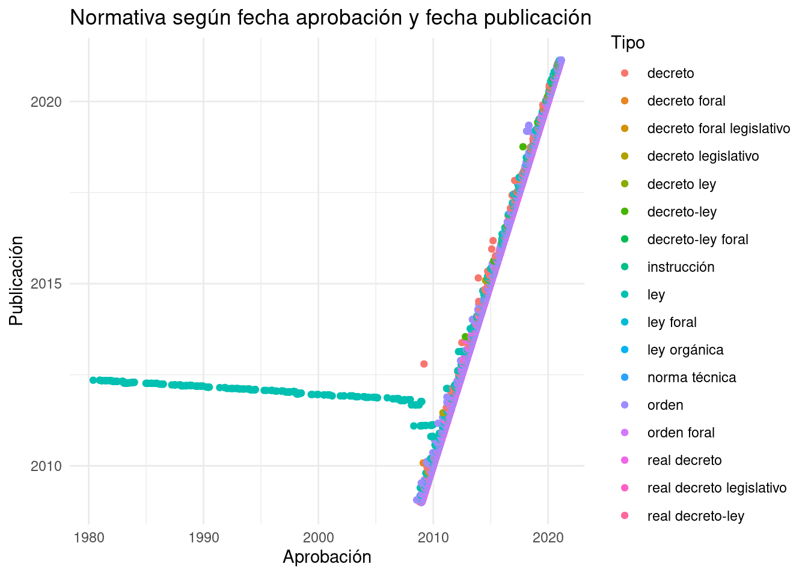
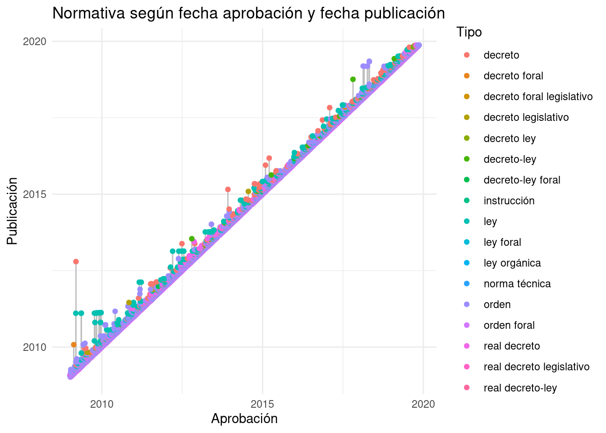
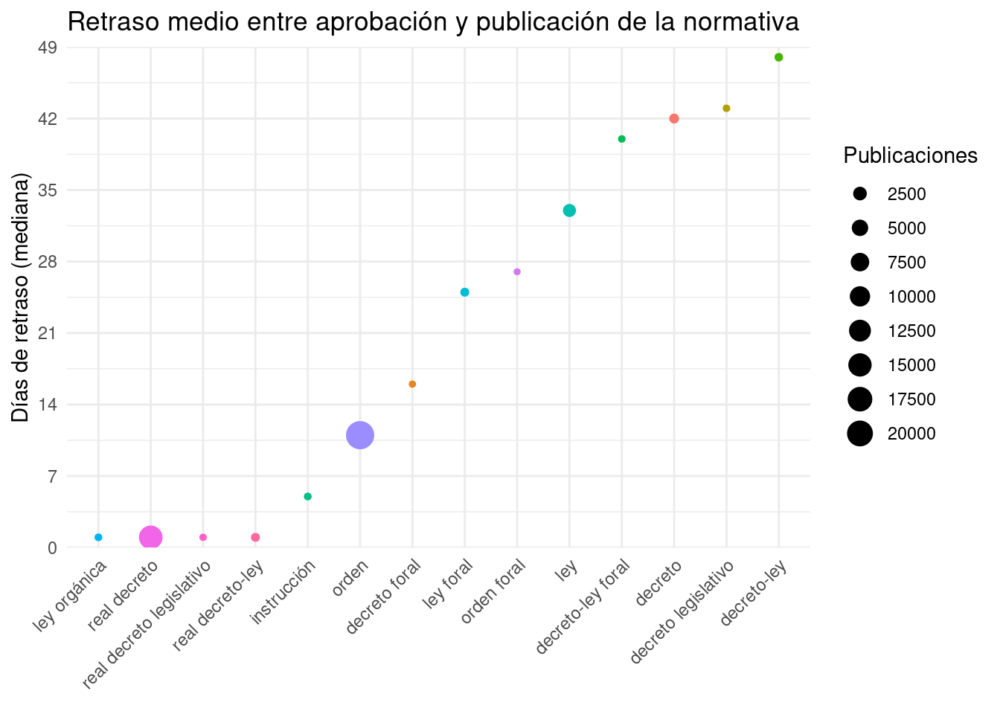
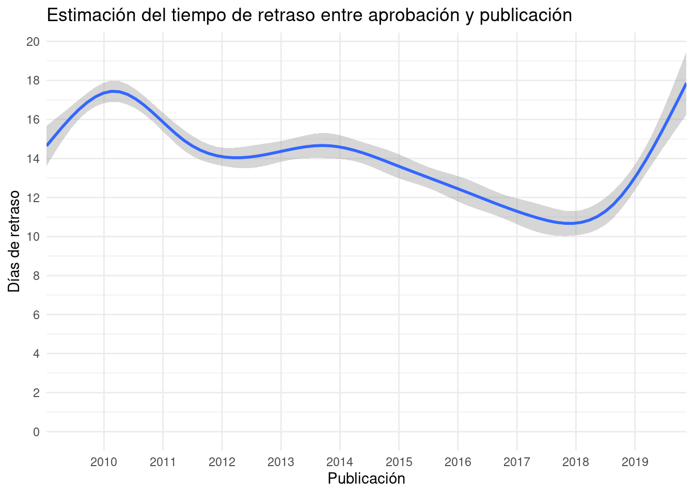
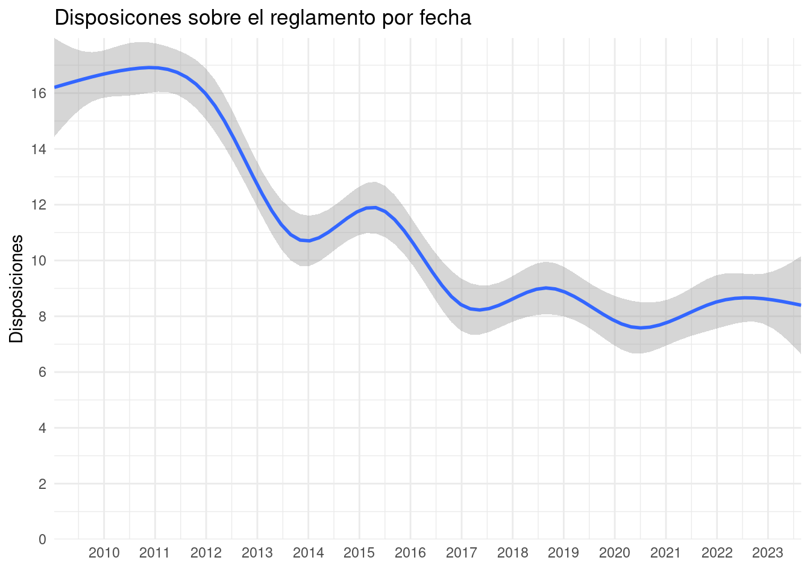
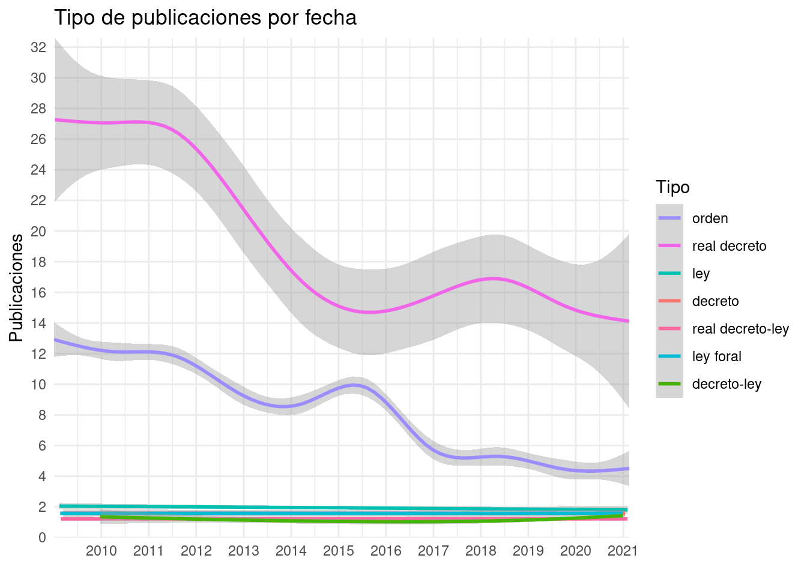
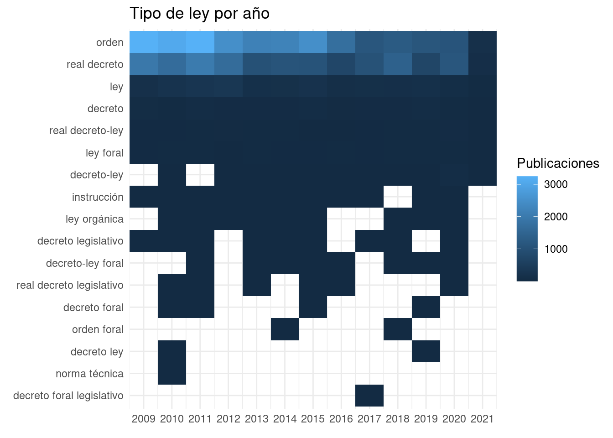
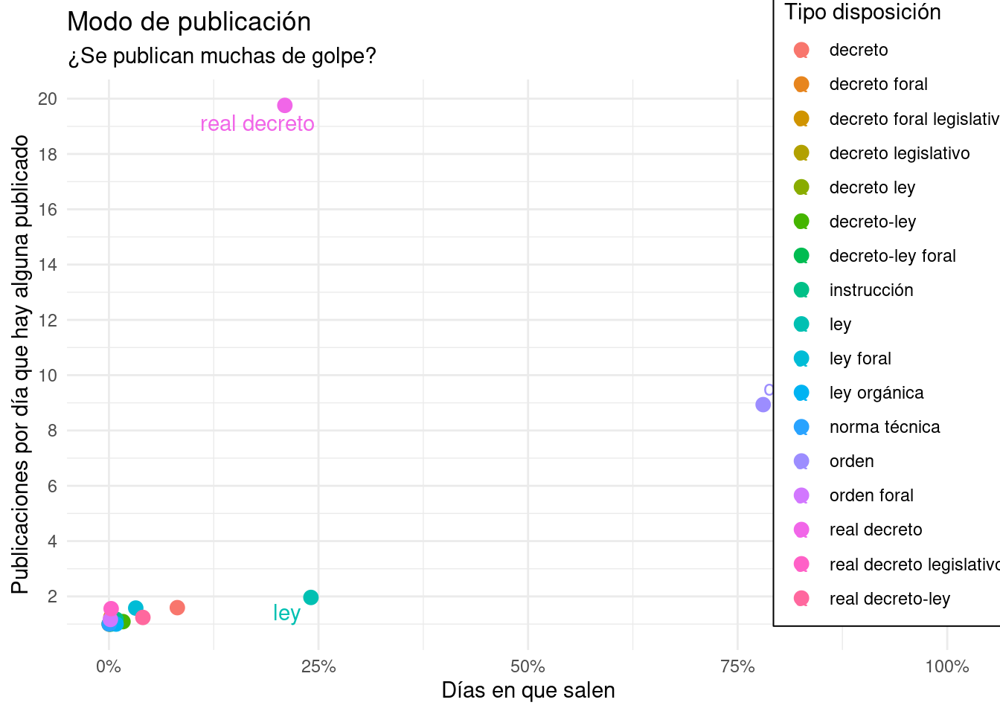
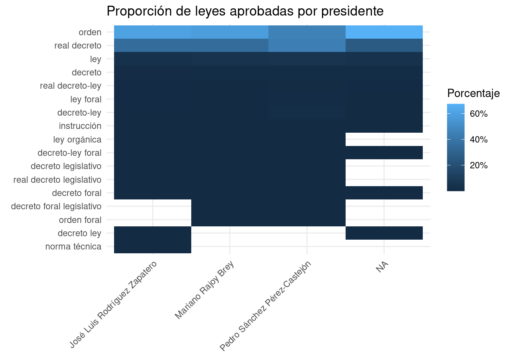
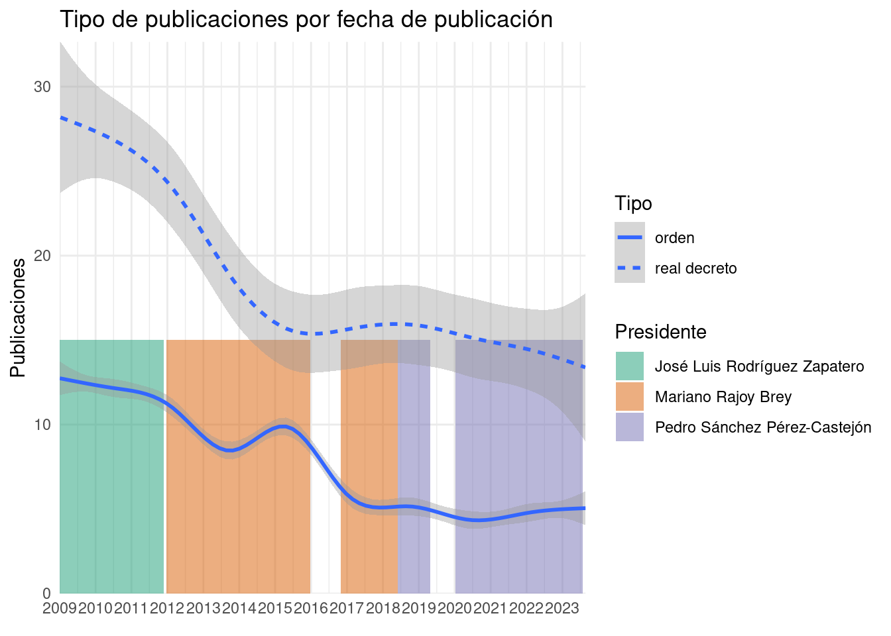

No conozco mucho las diferencias entre tipos de leyes pero los diferentes tipos tienen recorridos distintos y controles diferentes, así que ver los diferentes tipos de publicaciones puede ser relevante. También creo que puede ser interés si hay más retraso en la publicación de cierto tipo de reglamento o si en ciertas épocas se publica más otro tipo de normativa.
Aquí podemos ver todas las normas publicadas en el BOE desde el 2009 hasta la fecha de recolección de datos según la fecha de aprobación y la fecha de publicación en el BOE.

Hay un grupo de normativas que han tardado mucho en publicarse. Algunas leyes se transfirieron del País Vasco al BOE mucho más tarde, Pero otras son acuerdos que han tardado mucho. Si hacemos un zoom en las que se han aprobado sede 2009 podemos ver mejor que se han publicado casi todo muy pronto:

Si agrupamos por rango de ley podemos observar si hay alguna tendencia. También he recortado las que no aparecen más de 5 veces en todo el conjunto.

Antes de seguir me gustaría comentar un par de errores del BOE: BOE-A-2009-20666, BOE-A-2011-1183. En el primer documento, ¡¡se ha publicado antes de aprobarse!! La segunda publicación hay discrepancias en el sumario respecto a la publicación y posteriormente se publicó una corrección. Omito las dos publicaciones a partir de ahora. Podemos ver que hay mucha variación según el tipo de publicación:
| Tipo | Mínimo | Mediana | Percentil 75 | Máxmimo |
|---|---|---|---|---|
| real decreto-ley | 0 days | 1.0 days | 1.00 days | 7 days |
| real decreto | 0 days | 1.0 days | 19.00 days | 209 days |
| ley orgánica | 1 days | 1.0 days | 1.00 days | 3 days |
| real decreto legislativo | 1 days | 1.0 days | 2.00 days | 45 days |
| instrucción | 2 days | 5.0 days | 8.25 days | 51 days |
| orden | 0 days | 11.0 days | 17.00 days | 388 days |
| decreto foral | 1 days | 16.0 days | 21.25 days | 348 days |
| ley foral | 8 days | 25.0 days | 32.00 days | 68 days |
| orden foral | 8 days | 27.0 days | 27.50 days | 29 days |
| ley | 1 days | 29.0 days | 46.00 days | 700 days |
| decreto ley | 30 days | 37.5 days | 41.25 days | 45 days |
| decreto-ley foral | 15 days | 40.0 days | 48.50 days | 83 days |
| decreto | 1 days | 42.0 days | 66.00 days | 1315 days |
| decreto legislativo | 15 days | 43.0 days | 77.75 days | 224 days |
| decreto-ley | 4 days | 48.0 days | 60.50 days | 345 days |
En general se mantiene estable alrededor de 15 días entre la aprobación y la publicación:

Aunque hay más retraso últimamente esto se debe a un colapso por mayor número de publicaciones?

Cada vez se aprueban menos reglamentos, así pues el retraso no es por eso. Si miramos por tipo de legislación a lo mejor encontramos la causa:

Hay un ligero incremento de ordenes cuando se produce una disminución de real decretos. El resto de publicaciones se publican mucho menos y no se puede estimar bien su evolución en el tiempo a menos que lo agrupemos por año:

Ahora bien ¿se publican cada día un poco o en un solo día salen muchas leyes?

Los reales decretos se publican 1 de cada 4 días y suelen publicarse alrededor de 20. En cambio casi cada día se publican 9 ordenes. El resto de tipos de legislación no se publica ni frecuentemente ni en grandes cantidades cuando se hace.
Mirando el BOE podemos ver los cambios de presidente del gobierno. Sino es muy útil esta página de la wikipedia. Esto nos permite ver que se ha publicado con cada presidente (o sin presidente).

Parece que esté quien esté se aprueban el mismo tipo de leyes, exceptuando los decretos legislativos y los reales decretos legislativos. Tampoco se aprueban leyes orgánicas cuando no hay presidente.
Si miramos los tipos de leyes a lo largo del tiempo respecto los mandatos presidenciales quizá vemos otro panorama:
